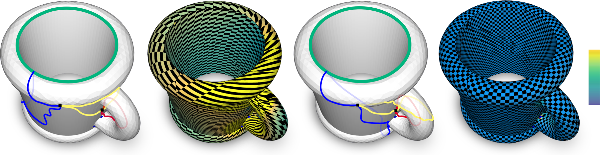
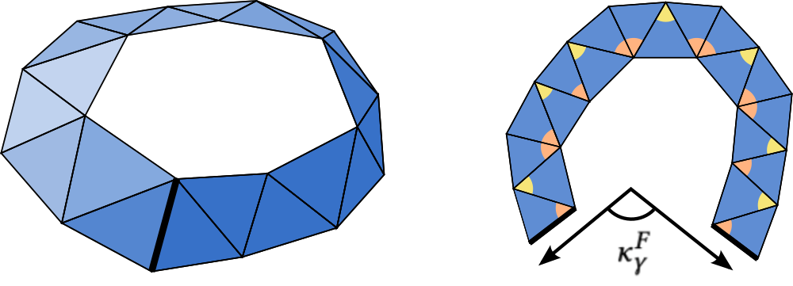
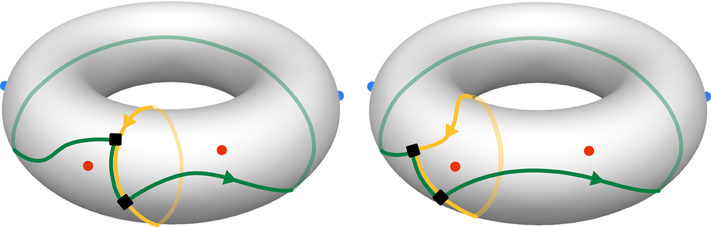
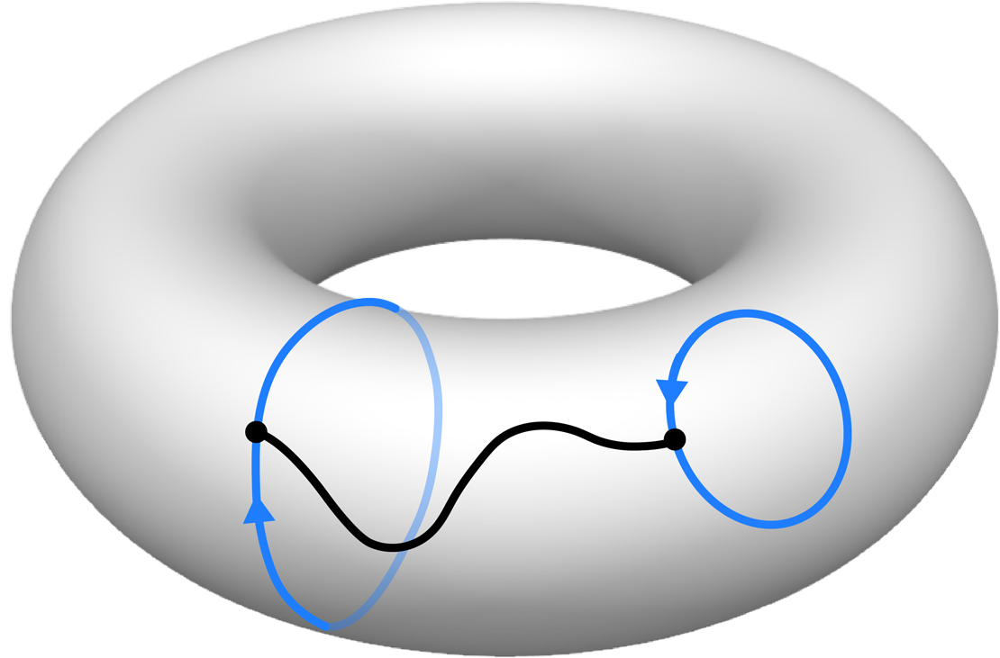
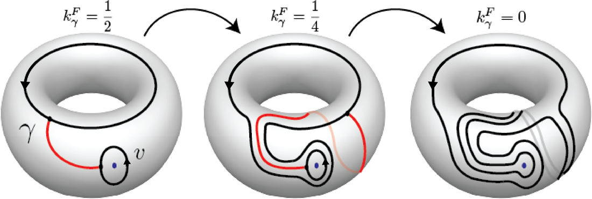
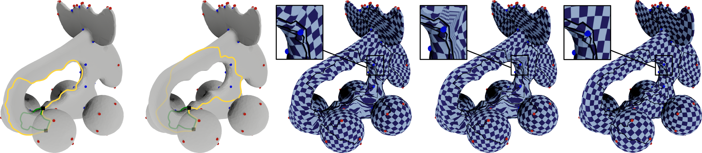
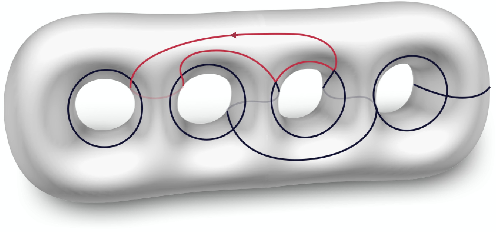
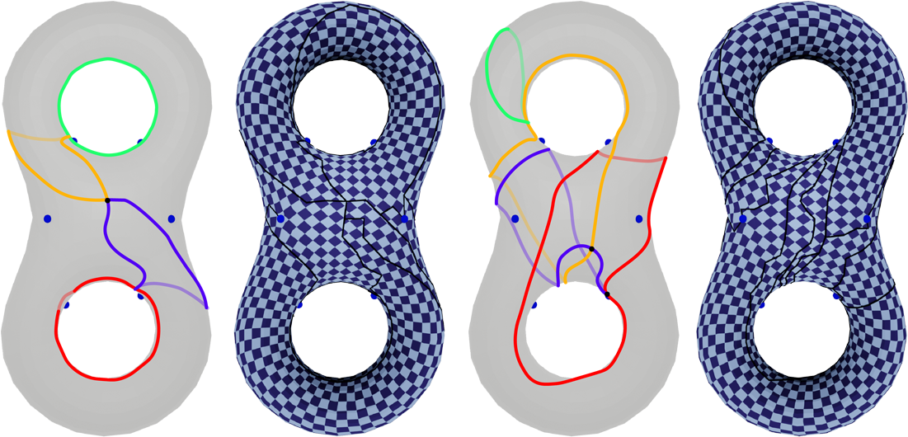
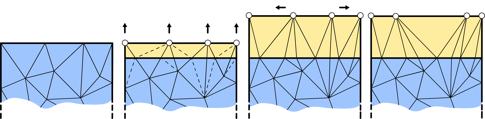
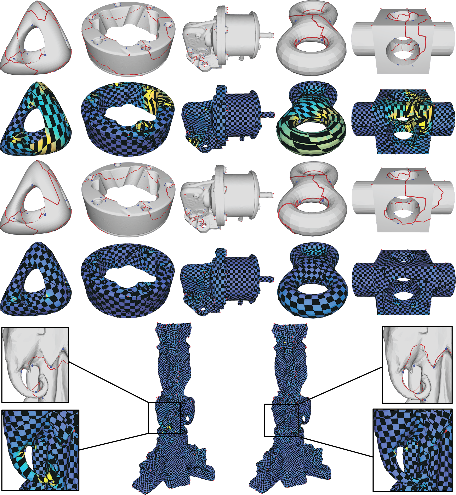

This talk covers seamless parametrization, the role of holonomy, our existence theorem, and the rerouting algorithm that makes prescribed holonomy realisable.

(a) Input loop system with a prescribed holonomy signature. (b) A state-of-the-art seamless map (Campen et al. 2018) that ignores global holonomy. (c) Our rerouted, topologically equivalent loop system. (d) Our seamless parametrization — perfectly matches the prescribed signature, with lower distortion and better field alignment.

The holonomy angle of a dual loop is the sum of signed inner angles along the strip — equivalently, the angle between first and last edge after laying the strip flat.
A piecewise-linear, locally injective map $F:M^c\to\mathbb{R}^2$ such that for every cut edge $e$ with mate $e'$, there is a rigid transform $\sigma_e(x)=R_e x + t_e$ with $R_e$ a rotation by an integer multiple of $\pi/2$, mapping $F(e)$ to $F(e')$.
and the holonomy number is $k_\gamma^F = \kappa_\gamma^F / (2\pi)$. For seamless maps it lives in $\tfrac14\mathbb{Z}$.
For a vertex loop $\partial v^*$, the index is $I_v^F = 1 - k_{\partial v^*}^F \in \tfrac14\mathbb{Z}$.
Holonomy numbers along a homology basis of $M\setminus C$:
This finite signature determines the holonomy number of every loop on the surface (via Gauss-Bonnet).
Different choices of basis loops give different numbers but represent the same parametrization topology — see right.
For a discrete cross field with turning numbers $T_\gamma$ on a homology basis, matching $T$ to $k$ on the basis forces a match for every loop. This is a Poincaré-Hopf-style identity:
Cross fields with any prescribed turning-number signature can be built by a linear solve [Crane et al., Trivial Connections]. Our method extends this topological control to parametrizations.

Two equivalent signatures. Cones: red $-\tfrac14$, blue $+\tfrac14$. Loop holonomy numbers boxed (0 vs $\tfrac14$). Sliding the loop across the leftmost red cone changes the number by exactly $-I_v = +\tfrac14$.
Constructing a seamless parametrization that matches a prescribed cross field requires getting both local and global holonomy right.
Topological match between cross field and parametrization is mandatory for high-quality quad meshing — it cannot be repaired downstream.
For which holonomy signatures does a seamless parametrization exist?
Let $H=\{\gamma_1,\dots,\gamma_{2g}\}$ be a system of loops cutting $M$ to a disk, and let cones $v_1,\dots,v_m$ have prescribed indices $I_1,\dots,I_m\in\tfrac14\mathbb{Z}$. If
then for any target shifts $k_1,\dots,k_{2g}\in\tfrac14\mathbb{Z}$, there is an alternative basis $\delta_1,\dots,\delta_{2g}$ (still cutting $M$ to a disk) with
For genus $\neq 1$, a seamless parametrization exists for any holonomy signature satisfying the GCD condition.
For genus 1, the only known counterexample (two cones with angles $\tfrac{3\pi}{2},\tfrac{5\pi}{2}$) is the only obstruction in the class.
Cross-field topology and seamless-map topology nearly coincide — the gap is essentially empty in practice.

Two non-intersecting loops $\gamma,\delta$ joined by a path $\alpha$.

Rerouting a loop around a cone of index $\tfrac14$ twice — holonomy changes by $\tfrac12$.
If $\alpha$ connects the right side of $\gamma$ to the right side of $\delta$, there is a simple loop $\gamma_0$ — arbitrarily close to $\gamma\cup\alpha\cup\delta$ — with
If $\alpha$ goes left-to-left, the $-1$ becomes $+1$.
Take $\delta = \partial v_i^*$ (the cone loop, $k_\delta = 1 - I_{v_i}$). Then
Sign depends on which side of $\gamma$ the path $\alpha$ comes in from.
Repeated rerouting around chosen cones can shift a loop's holonomy number by any integer combination of cone indices — an Extended Euclidean Algorithm reaches any target if the GCD condition holds.

(a) Input signature loops (yellow, green) with cones (red, blue). (b) Equivalent signature after rerouting — yellow takes a different path between cones. (c) Conformal parametrization respecting cones & cut alignment, yielding the prescribed holonomy pattern. (d) Padding makes it seamless. (e) Distortion + cross-field alignment optimisation within the topological class.

A hole-chain cut graph. Highlighted in red: a loop making two left turns — its parametrization holonomy number will be $\tfrac24 = \tfrac12$.
Built from $g$ non-contractible loops (one per handle) plus $2g-1$ connector paths chaining them. Both are computed on a four-sheeted cover $M_4$ using a cross-field-aligned anisotropic metric [Diaz et al. 2009; Campen 2014].
Soft-guidance promotes loops whose left/right-turn balance already matches the field's turning numbers — minimising downstream rerouting.
Take a spanning tree $T$ of $G$. Each of the remaining $2g$ bridge edges defines a unique loop (bridge + tree paths to root). These $2g$ loops form a system of loops.
Crucial fact: each bridge belongs to exactly one basis loop, so we can shift each loop's holonomy independently.
Along any loop in $G$, the SP method's output has holonomy number $\tfrac14(m_\ell - m_r)$ (left turns minus right turns). Our job is to make this balance equal the target.
For each basis loop with current balance $\tfrac14(m_\ell - m_r)$ and target $t$, reroute its bridge segment so that the balance changes by

Two different rerouted loop systems for the same prescribed holonomy. The final parametrizations are identical up to a seamless transformation.
Because the initial hole-chain is already field-aware, in many cases no rerouting is needed — and when needed, the field-guided Dijkstra resolves most cases without falling back.
On the cut mesh $M^c$ we compute a discrete conformal metric with
We use the convergent algorithm of Campen et al. 2021 / Gillespie 2021 (the same hyperbolic-Delaunay framework presented in our SIGGRAPH Asia 2021 paper), which gives strict convergence guarantees on these challenging boundary shapes.
Mate boundary segments are straight and meet at multiples of $\pi/2$, but lengths may differ. Stretch a thin cone-free strip along each segment so that mated segments equalise — provably feasible, preserves seamlessness.
Projected Newton on cross-field alignment $E_A$ + small symmetric Dirichlet $E_D$ as injectivity barrier; reduced-row-echelon parameterisation of constraints for stability.

Padding in the parameter domain: a thin strip along the top straight cut segment is stretched vertically; vertices then shift horizontally to match their mates across the cut.

Rows (a, e) SP cut graph | Rows (b) SP parametrization.
Rows (c, f) Our rerouted cut graph | Rows (d) Our parametrization.
The SP cut graph is topologically wrong relative to the field — its parametrization has high distortion that cannot be optimised away.
A genus-2 model walked through the rerouting + padding pipeline.
Our parametrizations, by construction, exhibit the cross-field's holonomy signature exactly. The remaining distortion (Table 2 in the paper) is significantly lower than the bare SP method — and the remaining map can be smoothly optimised toward the field, with no topological obstacle in the way.
Code, data, and additional results accompany the ACM TOG publication.